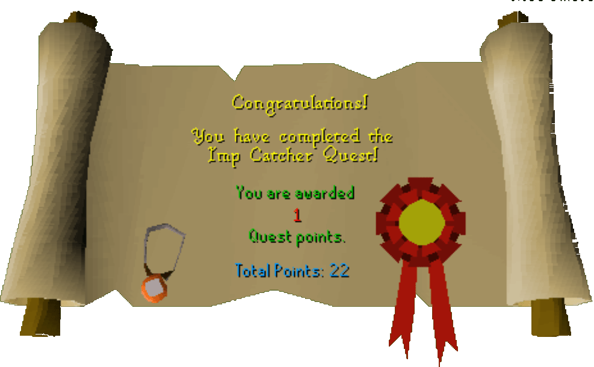

Imp Catcher
Description: The Wizard Grayzag has summoned hundreds of little imps. They have stolen a lot of things belonging to the Wizard Mizgog including his magic beads.Difficulty: Novice
Length: Medium
Items & Skills Needed:
Reward: 1 Quest point, 375 Magic XP, Amulet of Accuracy (+4 weapon accuracy)
Instructions:
Talk to Wizard Mizgog. He will tell you that he has lost his beads — red, white, black, and yellow. He will also tell you that Wizard Grayzag's imp stole the beads. Tell him that you will return them.
You can find some imps near the room where you are. Kill them to get the beads. Be patient — imps don't usually drop them. If you don't want to kill imps, don't worry — you can also buy the beads from other players. That will save you a lot of time.
After you have collected all the beads, return to Wizard Mizgog. He will reward you.
Congratulations, Quest Complete!

This quest guide was written on RuneHQ by henry-x.
This quest guide was entered into the database on Tue, Mar 02, 2004, at 10:25:33 PM by Weezy and was last updated on Wed, Mar 31, 2004, at 05:13:34 PM.